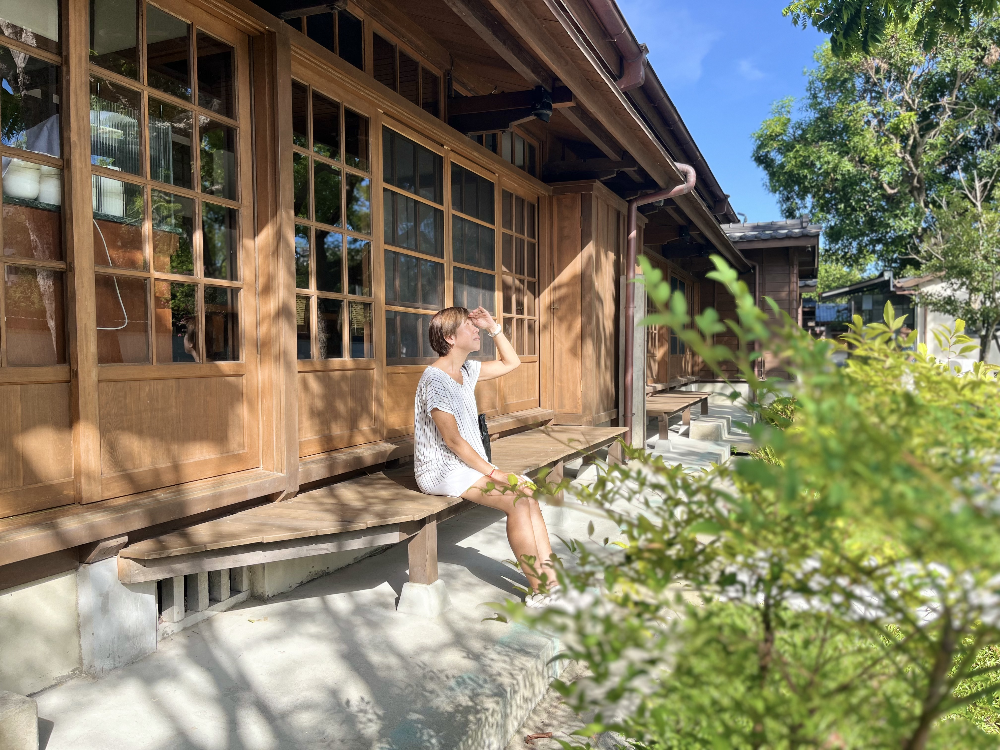

將軍府 1936
距離松園別館僅約
二
分鐘車程的將軍府，建於昭和
十一
年（西元
一九三六
年），原為花蓮港陸軍兵事部的高階軍官宿舍群。這處由檜木築成的木造建築群，曾在戰火中與松園別館遙遙相望，守護著美崙溪畔的靜謐。經過歲月的洗禮，如今它已轉型為融合文創與史蹟的藝文場域，靜靜訴說著那段關於將軍與士兵的往事。
地理位置：距離松園別館約 **六百** 公尺
進入 360° 沉浸式導覽
🔍 虛擬導覽內容由虛擬導覽專家製作，影像皆經 **四K** 高畫質處理 [cite: 2026-02-10]